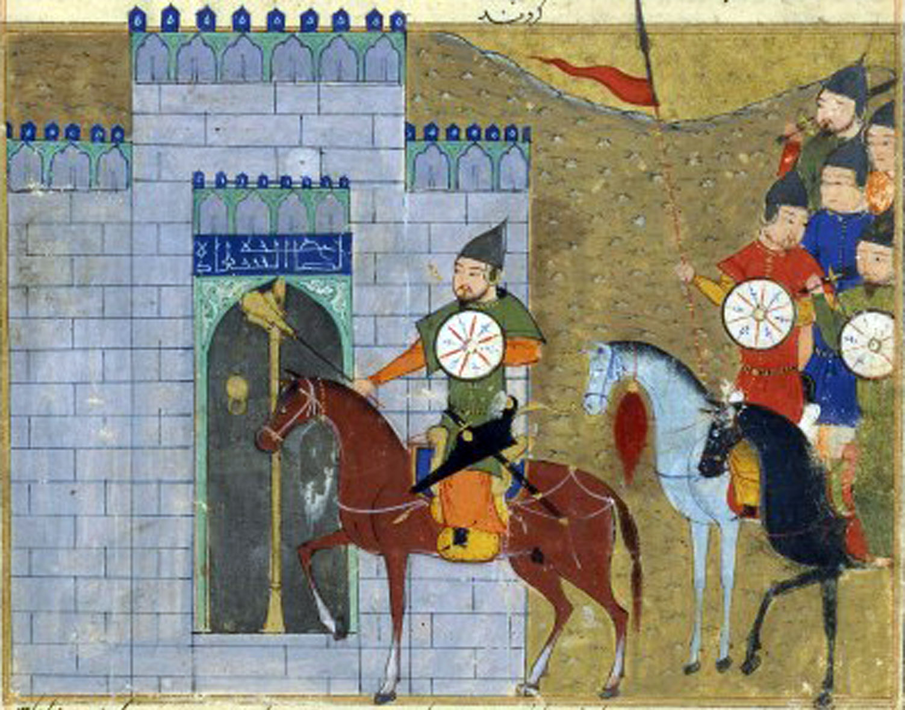

You make the gutsy call to abandon the horses, fearing the worst. But it turns out to be the correct move, as your archers, who even on foot are deadly accurate, still are able to overwhelm the Jin forces. Another day, another battle won.
The absolute decimation of the Jin forces in the Battle of Yehuling allowed Genghis Khan and his forced to advance to the Jin capital of Zhongdu in 1213. By 1215, the city had fallen, and the Jin had to retreat to the south.
Perhaps Genghis Khan could have conquered the whole Jin empire in his lifetime, but instead he turned his attention eastwards. Central Asia and Persia would soon be under his control too.
You chose a historical path! Read more about your decisions here.